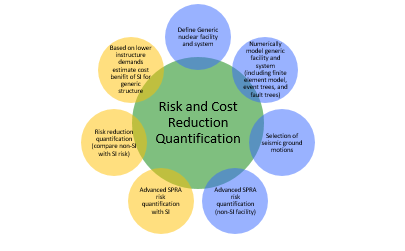

NSRD-01, Develop and Manufacture an Ergonomically-Sound Glovebox-Glove
Principle Investigator: Cindy Lawton, BCPE, PT (Los Alamos National Laboratory (LANL) with Cornell University), cindyl@lanl.gov
Project Description and Technical Objective: The project objective is to design and develop a safer and more ergonomically-sound glovebox-glove. The team will partner with a manufacturer for large-scale production of the glove that can be integrated into gloveboxes throughout the Department of Energy (DOE) complex. The initial approach to the development of a new glovebox-glove began with an extensive understanding of hand anatomy and anthropometrics as well as an in-depth literature review of glove development for other industries such as the National Aeronautics and Space Administration (NASA). Utilizing this data along with collaboration with an orthopedic hand surgeon, the new glovebox-glove dimensions were determined. Next, the team developed the ability to input the glove/hand dimension information into a 3D-engineering program. Finally, workers tested the new glove dimensions for validity and suitability. The new ergonomically-sound glove design has received a patent. The final two stages of this project are to bring this new technology design to a glove manufacturer for production and, once made, test the new glove for improved dexterity and comfort at two (2) different DOE sites.
Benefits or Application of the Results to DOE/NNSA Nuclear Facilities: This new design will be of great benefit since there are no suitable, commercially-available options to replace the current Los Alamos National Laboratory (LANL) glovebox glove, whose mold dates back to the 1960’s. An improved glovebox glove will have three significant benefits: 1) Reduction of injury risks, 2) Improvement in comfort and productivity of workers, and 3) Reduction of glovebox breaches. The estimated savings from the combination of these three (3) benefits are in the several million dollars.
Highlights/Status: As a result of funding from the fiscal year 2013 NSR&D Program, the new ergonomically-sound glove dimensions have been established and inputted into a 3D model. The dimensions have been verified with the glovebox workers. The LANL technical transfer organization negotiated a contract agreement with Honeywell, Inc., who produces a majority of glovebox gloves for the DOE complex. Los Alamos National Laboratory (LANL) purchases approximately $500,000 in glovebox gloves annually from Honeywell. The development phase of the project is complete, and the manufacturing phase is in process. Ultimately, the project will lead to improved safety and efficiency, a decrease in hand injuries and glove breaches, and a significant cost savings throughout the DOE complex.
During the Fall 2015, the new glove design and dimensions received a LANL patent (Patent Attorney docket No: LANS 36USD1 “Protective Glove”), one of 20 highest patents awarded by the Richard P. Feynman Center for Innovation. The project completed its interface with the manufacturer and has produced several gloves for testing. As of August 2016, after approval from the HSRB (Human Studies Review Board), Phase 3 (prototype testing) has begun and is currently ongoing with 30 glovebox workers from LANL tested, and Phase 4 (glove manufacturing) is expected for completion by December 2016. Introduction to the plant is expected within the next five (5) years. Once the new glove is introduced into the plant, a success in improved safety and efficiency is expected. The reduction in ergonomic injuries and glove failures and breaches can be further investigated along with the anticipated increase in significant costs savings throughout the entire DOE complex.
Completion Date: Anticipated December 2016
NSRD-02, In-Place Filter Testing Instrument for Nuclear Material Testing
Principle Investigator: Murray E. Moore, Ph.D., (Los Alamos National Laboratory (LANL), 505-665-9661), memoore@lanl.gov
Project Description and Technical Objective: The objective of this project is to develop a small (portable) desktop instrument to assess operational conditions of nuclear material storage containers without disassembling the containers. The instrument would determine if the high-performance filter on the storage container is clogged. Additionally, the instrument would determine if the container O-ring seal is air-tight or if the O-ring seal has failed.
The project is to develop a methodology to simulate failure conditions, procure a set of standard test filters and canisters, and define test criteria that are appropriate to storage canister operations. The testing is being conducted on two (2) types of nuclear material storage containers. The first type is the commonly-used Hagan canister with three (3) different sizes tested (5, 8, and 12 quart-size canisters), and the second type is the new SAVY canister being designed for use throughout the DOE complex (5 quart-size canister).
Benefits or Application of the Results to DOE/NNSA Nuclear Facilities: The DOE complex will benefit in regards to personnel safety and facility operations if an In-Place-Filter-Test (IPFT) capability is implemented. Filter integrity assessment would indicate whether the filter was plugged or operated within an acceptable performance range. A canister can be verified for leak-tightness, either after canister packaging, or by testing the as-found condition. Additionally, a set of standard filters and a method to define and maintain them would be indispensable for filter integrity assessment.
Highlights/Status: The Los Alamos Aerosol Engineering Facility developed a prototype In-Place-Filter -Test (IPFT) device. The prototype is a microprocessor-controlled system that applies a slight vacuum to an assembled nuclear material storage canister (e.g., 0.2 psi of vacuum compared to 14.7 psi atmospheric pressure). The prototype system was used to identify flow and pressure parameters for actual testing of canisters. Stainless steel fittings were custom-designed and built for a direct leak-test interface for the nuclear storage canisters and a set of tests performed with actual canisters. The prototype work defined a set of parameters which were used to specify the performance variables for a customized leak test system (the Isaac™ from Zaxis). Testing with the Isaac system is completed, and as of November 2015, the project final report has been completed and submitted to the Office of Scientific and Technical Information (OSTI) to communicate final results findings.
- Final Report: Part 1. In-Place Filter Testing Instrument for NuclearMaterial Containers. Part 2. Canister Filter Test Standards for Aerosol Capture Rates.
- LA-UR-14-27446 - Final Report: Part 1. In-Place Filter Testing Instrument for Nuclear Material Containers. Part 2. Canister Filter Test Standards for Aerosol Capture Rates.
Completion Date: Completed September 2015
NSRD-03, Ceramic HEPA Filters
Principal Investigator/Site(s) Involved: Mark Mitchell, LLNL (with the California Polytechnic University, the University of Texas, El Paso, and the Mississippi State University, Institute of Clean Energy Technology)
Project Description and Technical Objective: The technical objective of this project is to develop and deploy advances in HEPA filter technology (e.g., related to ceramic HEPA filters) to benefit DOE nuclear facilities by providing lower life-cycle costs and reducing or eliminating certain safety basis costs associated with safety class and safety significant systems in nuclear facilities. This project is broken into two main tasks. The first task is to perform high temperature testing on HEPA filter materials and components at Cal Poly’s High Temperature Testing Unit (HTTU) with assistance from the University of Texas, El Paso (UTEP). The second task is to develop qualification testing standards for ceramic HEPA filters at the Mississippi State University’s (MSU) Institute for Clean Energy Technology (ICET). Lawrence Livermore National Laboratory (LLNL) is the lead for the activity collaborating with these universities.
The goal of this project is to support development and deployment of advanced HEPA filter technology by enabling testing to support the understanding, selection, and optimization of materials under key conditions (e.g., extreme temperatures and fires in a nuclear facility) and to support the development of test setups and specifications for industry codes and standards (e.g., ASME AG-1 Subsection FO Ceramic Filters). The first effort utilizes the unique capabilities of the HTTU to test new and innovative materials for HEPA filter components (e.g., media, sealants, gaskets, gel seals). The second effort will use the DOE-sponsored ICET and HTTU as they relate to the development of test setups and specifications for industry codes and standards.
Benefits or Applications of the Results to DOE/NNSA Nuclear Facilities: This research has the potential to benefit the nuclear facilities of DOE, including the NNSA, by significantly lowering life-cycle costs, including decreasing design and operational costs associated with safety class or safety significant ventilation systems and components. Qualifying the performance of ceramic filters in a fire scenario could also significantly reduce or eliminate safety basis costs of support systems associated with mitigating a release. This could result in $1 to $10 million savings annually with potentially more anticipated. There is a significant design and operational cost savings associated with using normal life and property protection requirements, as opposed to requirements for safety class or safety significant systems with NQA-1, configuration management, and the USQ process. Simplifying facility behavior in fire scenarios could significantly cut modeling and analysis costs for nuclear facility Documented Safety Analyses (DSA). It is advantageous to DOE to focus fundamental research and development on engineering safety solutions (hardware) rather than additional analysis. Through longer filter life, DOE could save more than $11M annually related to reductions in waste disposal costs alone. The lifecycle cost of a HEPA filter in a DOE nuclear facility is driven mostly by the cost of disposing of radioactively contaminated HEPA filters, rather than the cost of the actual filter itself.
Highlights/Status: The ceramic test stand Technical Working Group (TWG) was established, with members from ICET, LLNL, the NSR&D Program, and the ASME AG-1 Subsection FO writing team. ICET gave a presentation on the ceramic test stand and its capabilities to the TWG. Preliminary tests have been conducted to down-select the seals, gaskets, media, and materials, and the most promising will be tested at full-scale conditions in the HTTU.
Task 1: As part of Task 1, the first Cal Poly student team completed its rapid prototype testing system (Mini High-Temperature Testing Unit (Mini-HTTU)) for preliminary tests on a large number of material samples. The first team concluded its portion of the project resulting in the full-time LLNL employment of the two graduate students. The second Cal Poly student team presented its final design for the rapid change out sample chamber and preliminary material selection, integrating the test section into the MHTTU and performed testing of various sealants and gaskets. A third student team has been recruited from the University of Texas, El Paso (UTEP) to address refinement of test fixtures for the MHTTU to include proposal of additional materials for potential testing. As of December 2016, the UTEP student effort and a third Cal Poly student team have been recruited, and efforts are currently in progress on the testing of high temperature sealants and gaskets along with the improvement of the Mini-HTTU.
Task 2: As part of Task 2, the research team at MSU’s ICET has concluded testing on an assortment of test procedures with results to be presented at the ANS June 2017 Meeting. A compiled report of findings is anticipated by the end of 2016.
Completion Date: Anticipated early Summer 2017
NSRD-04, Study of HEPA Filter Degradation Due to Aging
Principal Investigator/Site(s) Involved: Elaine Diaz, P.E., elaine.diaz@hq.doe.gov ; Charles Waggoner, Ph.D., waggoner@icet.msstate.edu (Mississippi State University, Institute of Clean Energy Technology (ICET))
Project Description and Technical Objective: High Efficiency Particulate Air (HEPA) filters are credited as the final barrier against release of radioactive contamination in nearly every operating DOE and NNSA nuclear facility. Approximately 6000 HEPA filters are purchased each year within the DOE/NNSA complex. Each of these filters is tested, inspected, and stored in special environmental conditions until needed. Upon need, the filters are installed, tested post-installation for in-place leakage, removed, and disposed of through a rigorous procedure designed to ensure integrity of these crucial, yet fragile components. Filter aging leads to degradation of tensile strength across the face of filter media pleats. The key mechanisms suspected in filter aging are environmental conditions in storage or during use such as humidity, temperature, oxidation, and pleat flutter. These issues have been discussed at length without sufficient data to provide definitive conclusions.
Concerns and uncertainty associated with the degradation of HEPA filter performance over time led DOE sites to limit HEPA filter service life to 10 years from date of manufacture. This policy requirement caused hundreds of otherwise unnecessary filter changes, putting employees at risk of exposure, causing facility operational disruptions, causing otherwise compliant filters to be disposed without being used due to expiring service life, and costing DOE millions of dollars annually. Conclusive data are needed to resolve uncertainty associated with the damaging effects of aging on durability of HEPA filters.
Testing will compare performance and durability under upset or design basis conditions of new filters, as well as filters retained in storage for ten to twenty years (past current service life). Testing will evaluate the effects of flutter/vibration, which may cause fatigue failure of filter pleats, and is suspected to be a leading cause of filter “aging” when installed in operating plants. These data are necessary to determine the envelope within which nuclear safety experts can credit HEPA filter performance as an accident control, leading to establishment of a risk-informed DOE service life.
The Mississippi State University (MSU) Institute for Clean Energy Technology (ICET) is a center of excellence for HEPA filter testing. The MSU ICET full-scale HEPA test stand has been used in past testing to challenge filters under simulated accident conditions. The technical approach for this research involves bench-scale and full-scale tests of aged and new HEPA media and filters for comparison. A technical working group composed of industry and DOE complex subject matter experts will guide detailed test planning and oversee progress.
Benefits or Application of Results to DOE/NNSA Nuclear Facilities: A deeper understanding of the effects of aging and fatigue on HEPA filter performance will help DOE define a service life for these fragile components that minimizes risk, while possibly reducing costs and work necessary to maintain these systems. There is potential cost savings to the government, as well as avoidance of operational impact and reduction of radiation exposure for DOE’s facility workers, if data supports extending HEPA shelf life and change-out intervals.
Status/Highlights: The design team established an initial test plan late 2015 of the aged HEPA filters to include testing objectives, test protocols, and the autopsy and analytical evaluation of media. The test plan was finalized early 2016 which included several filters tested from various manufacturers of varying conditions and age along with a completed test matrix. A number of testing filters were received, validated, and tested during the first half of 2016. Testing was completed by the end of June 2016 with the final study and report finalized at the end of 2016. The results and findings will be submitted to the Office of Scientific and Technical Information (OSTI) by early 2017.
Completion Date: Anticipated December 2016
NSRD-05, Development and validation of methodology to model flow in ventilation systems commonly found in nuclear facilities
Principal Investigator/Site(s) Involved: James Bailey, Ph.D., P.E. (Argonne National Laboratory (ANL)), jbailey@anl.gov
Project Description and Technical Objective: It is known that multiple sites across the DOE complex take credit for hot cells, gloveboxes, and hoods in their safety basis for providing a defense-in-depth benefit for both onsite and offsite releases. By providing confinement of radioactive materials, such features serve to reduce direct doses to facility workers and mitigate the consequences to the environment due to an uncontrolled release. Each of these features has access points that interface with the personnel space. Understanding how air flow behaves at these access points is of great interest to those performing hazard analyses. Argonne National Laboratory (ANL) has recently started applying Computational Fluid Dynamics (CFD) to analyze and model the flows in hot cells and glove boxes as a way to confirm operation. While CFD capability continues to advance, there are still important modeling assumptions that are left to the analyst’s discretion. These are most notably the choice of the turbulence models, mesh structure, and wall boundary condition assumptions used in the model. The modeling assumptions have a profound impact on the analysis result, and it is the purpose of this proposal to determine and validate proper choices through an iterative analysis/validation process.
In this work, the project will apply the CFD experience gained in modeling airflow in these areas to the problem of modeling air flow and particulate transport. These studies will include a specifically-selected set of standard geometries commonly found in glovebox and hot cell facilities. This modeling will be supported by field measurement studies which will both inform and validate the modeling assumptions. Based on the results of field tests, the project will refine the modeling assumptions and boundary conditions and repeat the process until the results are found to be reliable with a high level of confidence.
Benefits or Application of the Results to DOE/NNSA Nuclear Facilities: The main outcome of this project is the development of a methodology for using CFD to analyze the glovebox and hot cell installations. This methodology will include the modeling assumptions for a variety of typical configurations that were arrived at through the iterative modeling and validation procedure described above. Having such a methodology will provide guidance to other analysts and reduce uncertainty. It will also remove or reduce the need for further validation. Further, this methodology will also be beneficial to designers of glovebox and hot cell facilities.
Status/Highlights: As part of Phase 1, a findings report was submitted in November 2015 where the project team developed a methodology for the analysis of gloveboxes which included smoke trace testing showing air flow patterns in the event of glovebox glove breach. Initial analyses included vortex stretching and the natural convection flow due to thermal conditions or induced room ventilation supply and demand ducts. Utilizing AGS standards, typical glovebox configurations were analyzed and identified as being typical for DOE laboratory use. Operating conditions such as flow information, room conditions, and accident types were all factored in the process.
As part of Phase 2, the project team extended the methodology to include hot cells and particulate flow. During the first quarter of 2016, hot cell smoke testing, revisions to the CFD model in accordance with test results, and CFD analysis of particle flow were all conducted and completed with receipt of the finalized Phase 2 test report.
As of early 2016, the project final report has been completed and submitted to the Office of Scientific and Technical Information (OSTI) to communicate final results findings.
The research team potentially plans to submit a follow-on proposal in the upcoming 2017 fiscal year to further and enhance the results of this research.
A follow-on proposal in the upcoming CFP17 to further and enhance the results of this research is anticipated.
Completion Date: March 2016
NSRD-06, Computational Capability to Substantiate DOE-HDBK-3010 Data
Principal Investigator/Site(s) Involved: David L.Y. Louie, Ph.D., (Sandia National Laboratory (SNL)), dllouie@sandia.gov
Project Description and Technical Objective: Safety basis analysts throughout the DOE complex rely heavily on the information provided in DOE Handbook (HDBK) 3010, Airborne Release Fractions/Rates and Respirable Fractions for Nonreactor Nuclear Facilities to determine source terms. Most often, the analysts simply take the bounding values because of time constraints and to avoid regulatory critique. Although the Handbook is comprehensive in terms of data to derive airborne release fractions and respirable fractions to bound the main types of accidents that could be encountered in the complex, the derivation of the data often depended on table-top and bench and laboratory experiments, as well as engineering judgment which may not be substantiated and may not be representative of the actual situation. The goal of this research is to provide a more accurate method in identifying bounding values for the Handbook. The advancement in computing capabilities at national laboratories allows the use of code simulation methods to provide more representative values for the source term.
This research should provide insights about the fundamental physics and phenomena associated with the types of accidents, based on the maturity of the simulation tools developed for the weapons complex. Although these tools require intense computational power, the availability of these tools and computing power allows safety analysts to utilize them for non-weapons-related safety activities. These simulation tools will be used to assess whether the data used to derive the airborne release fractions and respirable fractions in the Handbook are reasonably accurate and bounding.
Benefits or Application of Results to DOE/NNSA Nuclear Facilities: If the reduced-scale data are conservative, the source term used for the documented safety analyses may over-specify the need for design controls. This over-specification could substantially be a cost to DOE and NNSA. If the data are non-conservative, the documented safety analysis may underestimate the source term, which could translate to a significant safety concern for the workers and public. In either case, the results of the research may improve how the safety basis analysts across the complex approach the selection of bounding airborne release fractions and respirable fractions, which can result in improving the defensibility of the safety analyses.
Status/Highlights: This project is completed with research results showing the SIERRA code suite can be used to simulate fire experiments and powder release experiments. The project team completed its validation comparison to dataset in DOE Handbook 3010, Section 3.3 using FUEGO. The team also simulated representative pool fire scenarios in Section 3.3 and established baseline simulations. Sensitivity runs were conducted, and resulted were analyzed. The team explored simulations of an object impact on a small vessel containing powder and the effects of the pressurized release of this powder. The final report has beenwas developed and made available to the public December 2015.
Completion Date: December 2015
NSRD-07, Stochastic Modeling of Radioactive Releases
Principle Investigator: Jason Andrus, P.E., Idaho National Laboratory (INL), jason.andrus@inl.gov
Objective: Traditional radioactive material release modeling codes generally provide a bounding single point estimate of receptor dose using point value input parameters and a straight-line Gaussian plume dispersion model. However, this approach can fall short since it tends to provide bounding dose estimates rather than a dose distribution with quantification of the dose uncertainty. This is particularly problematic when one considers the impact of governing distributions for input variables such as material-at-risk, damage ratio, airborne release fraction, respirable fraction, leak path factor, breathing rate, and even dose conversion factors. Additionally, although the atmospheric dispersion model is based on a Gaussian distribution, stochastic sampling of the distribution is typically not used to reach the dose estimate. Thus, decisions regarding potential doses to members of the public are frequently overstated, leading to excessively conservative material-at-risk limits and potential over selection of safety-systems structures or components.
To address this issue, a simple-to-use Monte Carlo-based code system is proposed to stochastically analyze radiological material release scenarios and provide dose distribution estimates. This approach will support improved risk understanding leading to better-informed decision making associated with establishing material-at-risk limits and safety-system, structure, or component selection. It is important to note that this project is not intended to replace or compete with codes such as MACCS or RSAC. Rather, it is viewed as an easy-to-use supplemental tool to help improve risk understanding and support better-informed decisions.
Technical Approach: The code system will be developed and executed using MATLAB, and it will incorporate widespread use of Monte Carlo methods as well as a graphical user interface for ease of operation. Monte Carlo techniques will include user selection of the governing distribution for such input parameters as the material-at-risk, damage ratio, airborne release fraction, respirable fraction, leak path factor, breathing rate, and dose conversion factors. Once the code system is developed, bounding value dose results will be benchmarked using traditional radioactive material release modeling codes such as MACCS or RSAC. Systematic investigation of each parameter contributing to the dose result will be pursued to quantify the parameter’s contribution to the overall dose estimate and uncertainty. The process will be carried out for a suite of disruptive scenarios. Systematic study of each contributing parameter will lead to identification of the parameters that have the largest impact on the resulting dose estimate uncertainty. Once identified, investigation into reducing uncertainty in the key parameters can be accomplished.
It is expected that the project will be carried out over a two-year period. The first year will be dedicated to construction of the code system, and the second year will be dedicated to parametric study.
Benefits: The most important benefit associated with this project will be improved risk understanding. Contractors and approval authority personnel will be able to make better informed decisions by being able to compare dose estimate results that include a much deeper quantification of the impact of contributors to the dose estimate with the currently-used highly conservative methods. This will allow for risk informed decisions relating to areas where use of alternative methods may justify significant cost savings without reduction in safety.
Status/Highlights: The project team developed the compiled, stand-alone code named Stochastic Objective Decision Aide (SODA) using the MATLAB software. The newly-developed code allows users to examine the impact of radioactive release distributions on a calculated dose. This research work has received a second year of funding for FY15 listed under NSRD-08 to expand the application’s capabilities.
Completion Date: December 2015
NSRD-08, Stochastic Modeling of Radioactive Releases
Principle Investigator: Jason Andrus, P.E., Idaho National Laboratory (INL), jason.andrus@inl.gov
Objective: US DOE nonreactor nuclear facilities use unmitigated hazard evaluations to determine if potential radiological doses from design basis events (DBEs) challenge dose evaluation guidelines. Unmitigated DBEs that challenge dose evaluation guidelines may merit the selection of safety structures, systems, or components (SSCs) to prevent or mitigate the hazard. Computer codes used to calculate the radiological dose associated with DBEs generally provide a bounding dose result.
The bounding estimate approach, while necessary, fails to provide a comprehensive understanding of the risk associated with a DBE. This is particularly problematic when one considers the impact of input variable governing distributions such as material-at-risk, damage ratio, airborne release fraction, respirable fraction, leak path factor, breathing rate, atmospheric dispersion parameters, and even dose conversion factors. Thus, decisions resulting from bounding calculated DBE doses can be excessively conservative and may result in unnecessarily restrictive material-at-risk limits and potential over selection of safety SSCs.
Idaho National Laboratory, in collaboration with Idaho State University, is currently engaged in the development of a portable and simple to use software application, called SODA (Stochastic Objective Decision-Aide) that utilizes stochastic methods for the calculation of radiation doses associated with DBEs. The software application provides improved risk understanding leading to better-informed decision making associated with establishing material-at-risk limits and safety SSC selection. It is important to note that this project does not replace or compete with codes such as MACCS or RSAC, rather it is viewed as an easy to use supplemental tool to help improve risk understanding and support better informed decisions.
Initial development work associated with the software application was performed through an award from the US DOE Nuclear Safety Research and Development (NSR&D) Program under the Fiscal Year 2014 Call for proposals. This proposal addresses continuation of the project to further enhance the software application, perform parametric study, and complete verification and validation.
Technical Approach: The software application has been developed using MATLAB, incorporating widespread use of Monte Carlo methods as well as a graphical user interface (GUI) for ease of operation. The first year of the project was dedicated to construction of the code system. This proposal addresses the second year of the project which will be dedicated to overall application enhancement, parametric study, and verification and validation.
Systematic investigation of each parameter contributing to the dose result will be pursued to quantify the parameter’s contribution to the overall dose estimate and uncertainty. Code modifications to automate the systematic study of each contributing parameter will lead to identification of parameters that have the largest impact on the resulting dose estimate uncertainty.
Benefits: The most important benefit associated with this project will be improved risk understanding. Contractors and approval authority personnel will be able to make better informed decisions by being able to compare dose estimate results in the form of a distribution to the dose estimate results obtained with the bounding method. This will allow for risk informed decisions relating to areas where use of alternative methods may justify significant cost savings without reduction in safety.
Status/Highlights: As a follow-up to the completion of NSRD-07, the team has continued using the developed Stochastic Objective Decision Aide (SODA) software application code, further understanding its capabilities by expanding the material-at-risk selection, allow user-defined distributions, and permit parametric studies. The team is currently working on theconcluding its validation and verification process along with the user manual to assist the user in using the application. Results of the project findings are expected by Falllate 2016 with a projection to award three (3) graduate students from Idaho State University (ISU) individual Master’s Degrees in their contributions to the research.
Completion Date: Anticipated December 2016
NSRD-09, Mitigation Of Seismic Risk At Nuclear Facilities Using Seismic Isolation
Principal Investigator: Justin Coleman, P.E., Idaho National Laboratory (INL), justin.coleman@inl.gov, Andrew Whitaker, Ph.D., University of Buffalo, awhittak@buffalo.edu
Objective: Use seismic probabilistic risk assessment (SPRA) to evaluate the reduction in seismic risk and estimate potential cost savings of seismic isolation of a generic nuclear facility. This project would leverage ongoing Idaho National Laboratory (INL) activities that are developing advanced (SPRA) methods using Nonlinear Soil-Structure Interaction (NLSSI) analysis.Use seismic probabilistic risk assessment (SPRA) to evaluate the reduction in seismic risk and estimate potential cost savings of seismic isolation of a generic nuclear facility. This project would leverage ongoing Idaho National Laboratory (INL) activities that are developing advanced (SPRA) methods using Nonlinear Soil-Structure Interaction (NLSSI) analysis.
Technical Approach: The proposed study is intended to obtain an estimate on the reduction in seismic risk and construction cost that might be achieved by seismically isolating a nuclear facility. The nuclear facility is a representative pressurized water reactor building nuclear power plant (NPP) structure.

The study will consider a representative NPP reinforced concrete reactor building and representative plant safety system. This study will leverage existing research and development (R&D) activities at INL. Figure 1 shows the proposed study steps with the steps in blue representing activities already funded at INL and the steps in purple the activities that would be funded under this proposal.
The following results will be documented: 1) Comparison of seismic risk for the non-seismically isolated (non-SI) and seismically isolated (SI) NPP, and 2) an estimate of construction cost savings when implementing SI at the site of the generic NPP.
Benefits: This research would show the potential reduction in seismic risk and cost of a generic nuclear facility. DOE EM, NNSA, and NE are constructing, planning to construct, or planning to be involved in the construction process of a number of new nuclear facilities (such as CMRR), including Consolidated Storage Facilities, high-level waste facilities, and Small Modular Reactors SMRs. To assist with the implementation of seismic isolation (SI) within the DOE complex, it is important to understand the potential for SI to minimize risk associated with large ground motions and reduce the cost of construction.
Implementation of seismic isolation in DOE nuclear facility designs will potentially lead to cost savings in design, system qualification, and construction as well as decouple the nuclear facility motion from the uncertain seismic hazard and provide substantial improvements in safety and reductions in risk.
Status/Highlights: During the Fall 2016, the research team developed a simple spreadsheet-based tool to quantify the potential benefits of seismic isolation by comparing the costs associated with the use of seismic isolation with those of conventional seismic design approaches. The final report was reviewed and finalized on December 2016. The results and findings will be submitted to the Office of Scientific and Technical Information (OSTI) by early 2017.
Completion Date: Anticipated December 2016
NSRD-10, Leak Path Factor Guidance Using Melcor
Principal Investigator/Site(s) Involved: David L.Y. Louie, Ph.D., (Sandia National Laboratory (SNL)), dllouie@sandia.gov
Objective: Estimate of the source term from a DOE non-reactor facility requires that the analysts know how to apply the simulation tools used, such as the MELCOR code, particularly for a complicated facility that may include an air ventilation system and other active systems that can influence the pathway of the materials released. DOE has designated MELCOR version 1.8.5, an obsolete version, as a DOE ToolBox code in its Central Registry including a leak path factor guidance report written in 2004 which did not include experimental validation data. To continue use of the obsolete MELCOR version requires additional verification and validations which may not be feasible from the project cost standpoint. Without any developer support and lack of experimental data validation, it is difficult to convince regulators that the calculated source term from the facility is accurate and defensible. The goal of this research is to solicit the replacement of the obsolete guidance report with validation enhancement with the latest version of MELCOR to provide accuracy and defensible results in using MELCOR for leak path source term determination.
Technical Approach: The objective of this research is to replace the obsolete 2004 DOE leak path factor guidance report by using MELCOR 2.1 (latest version with continuing modeling development and user supports), and by including applicable experimental data from the reactor safety arena and from applicable experimental data in the DOE-HDBK-3010. This research will also provide best practice values used in MELCOR, specifically for the leak path determination. With these enhancements, the revised leak path guidance report should provide confidence to the safety analysts who would be using MELCOR as a source term determination tool for mitigated accident evaluations.
Benefits: This research reduces the uncertainty and provides confidence in using MELCOR for the leak path source term determination. It will provide verification and validation data sets for safety analysts to use for quality assurance before conducting accident calculations using MELCOR for leak path source term determination. This would reduce the project cost on establishing quality assurance for MELCOR. This research would also provide sufficient guidance information on MELCOR usage for leak path source term determination without burdening safety analysts and regulators with concerns about the accuracy and applicability of the MELCOR models used because the research provides the best practices for using MELCOR for non-reactor applications. This research would benefit DOE sites that require leak path source term calculations for their non-reactor nuclear and non-nuclear facilities.
Status/Highlights: On October 2015, the project team identified, reviewed, and summarized the 2004 DOE leak path factor (LPF) guidance report and course material from open literature. The research team is scheduled to complete the project on September 2016 with a summary of applicable reactor experiments that can be used for LPF applications, to include calculations on applicable experimental data from DOE-HDBK-3010, development of a set of best practices using MELCOR LPF, and a final report of findings. Results from this research project was presented at the November 2016 Winter ANS Meeting.
In addition, guidance on modeling fire scenarios using MELCOR was shared with Knolls Atomic Power Laboratory (KAPL) for use in Navy applications.
As of December 2016, the final report is drafted and being reviewed at Los Alamos National Laboratory (LANL) and KAPL before finalization.
Completion Date: Anticipated early 2017
NSRD-11, Computational Capability To Substantiate DOE-HDBK-3010 Data
Principal Investigator/Site(s) Involved: David L.Y. Louie, Ph.D., (Sandia National Laboratory (SNL)), dllouie@sandia.gov
Objective: Safety basis analysts throughout the DOE complex rely heavily on information provided in the DOE Handbook, DOE-HDBK-3010, Airborne Release Fractions/Rates and Respirable Fractions for Nonreactor Nuclear Facilities to determine source terms of radioactive material releases. Most often, due to time constraints and to avoid regulatory critique, analysts simply take the bounding values in the Handbook. The Handbook provides a comprehensive compilation of data to determine airborne release fractions (ARF) and respirable fractions (RF) that bound the types of accidents that could be encountered in the complex. However, the data are often based on bench-scale experiments which may not be representative of the actual full-scale situation. Also, some sections have not been updated for decades. The goal of this research is to provide a more accurate method to determine bounding values for the ARF and RF. We propose to use state-of-the-art DOE computer codes and parallel computing to provide physics-based bounding values for ARF and RF to be used for determining the source term.
Technical Approach: This research will provide insights on the fundamental physics associated with the types of accidents for applications within the weapons complex. The computational tools in terms of software and hardware are already available, but have not yet been fully deployed to assess the airborne release fractions and respirable fractions in the Handbook. We will determine if the current guidelines are reasonably accurate and bounding and make recommendations when they are not.
Benefits: If this research determines that the data are too conservative, the source term used for the documented safety analysis may over-specify the implementation and design controls. This over-specification could be a substantial and unjustified cost to DOE/NNSA. If this research determines the data are non-conservative, this means that the documented safety analysis underestimates the source term, which may be a significant safety concern to workers and the public. In either case, the results of the research may enhance how the safety basis analysts across the Complex approach the selection of bounding airborne release fractions and respirable fractions. This work should result in improved defensibility of the safety analyses.
Status: The project team completed NSRD-06 with research results showing the SIERRA code suite can be used to simulate fire experiments and powder release experiments. The project team completed its validation comparison to dataset in DOE Handbook 3010, Section 3.3 using FUEGO. The team also simulated representative pool fire scenarios in Section 3.3 and established baseline simulations. Sensitivity runs were conducted, and resulted were analyzed. The team explored simulations of an object impact on a small vessel containing powder and the effects of the pressurized release of this powder. The NSRD-06 final report has been developed and released for public use.
As part of NSRD-11, the project team included FUEGO user subroutine capability to allow enhanced particle models and added multi-component capability. The team also added subroutine to FUEGO for aerosol resuspension physics, reanalysis of beaker fire experiments and gasoline fire experiments using improved FUEGO model, simulation of powder release/liquid droplet release using FUEGO/MELCOR, and simulation of fragmentation phenomena and impacts to ceramic materials using PRESTO.
With the completed models and final simulations conducted early Fall 2016, the final report to include input decks was finalized December 2016, and the results and findings will be submitted to the Office of Scientific and Technical Information (OSTI) by early 2017.
Completion Date: December 2016
NSRD-12, Novel Mini-tubular Media For Nuclear Facility Ventilations Systems
Principal Investigator/Site(s) Involved: James P. Kelly, Ph.D., (Lawrence Livermore National Laboratory (LLNL)), kelly70@llnl.gov
Objective: The overall objective of this proposal is to improve safety of DOE nuclear facilities in fire scenarios while reducing pressure drop and increasing performance. This will reduce life cycle costs, including safety basis, operational and waste disposal costs. The primary objective of this work is to demonstrate that a collection1 of self-supported mini-tubular media can reduce pressure drop across a filter in comparison to an equivalent filter mass in a membrane configuration. A secondary objective is to develop the processes for producing novel nanofiber wall self-supported mini-tubular media. Reducing the pressure drop across a filter through mini-tubular design can be combined with nanofiber technology to improve performance beyond current pressure drop limits. Furthermore, developing nanofiber wall mini-tubular media can solve shrinking and wide-area deposition challenges associated with manufacturing ceramic nanofiber membranes and coatings. This will support the development of specifications for industry codes and standards (e.g., ASME AG-1 Subsection FO Ceramic Filters).
Technical Approach: Commercial stock will be purchased and machined into two geometries for comparison: mini-tubular and membrane type. The pressure drop of the two filter geometries will be determined by this scoping study and compared to determine the feasibility for reducing pressure drop with a mini-tubular filtering media. To form the mini-tubular media, nanofibers will be deposited onto a sacrificial substrate that will be removed after the fibers are deposited. This should solve shrinkage challenges that are associated with the thermal processing of ceramic membranes. Finally, a collection of the mini-tubular media will be put in a flow path and tested to determine overall pressure drop. The overall project duration is less than 2 years.
Benefits: The result of this research will improve safety of DOE nuclear facilities in fire scenarios while reducing pressure drop and increasing performance. An advanced HEPA filter technology can save DOE nuclear facilities an estimated $11M to >$36M annually, by providing lower life-cycle costs and reducing or eliminating safety basis costs associated with safety class and safety significant systems used in nuclear facilities. High temperature materials with lower pressure drops can be substituted into safety class and safety significant filtration systems within ventilation systems to reduce costs. It is also advantageous to invest in developing hardware for engineering safety solutions rather than only additional analysis.
Status: As of December 2016, the work is currently ongoing with the research and purchase of commercial media stock, the establishment of tubular and geometric geometries, and the upgrade of electrospinning apparatus and process.
Completion Date: TBD
NSRD-13, Container Fire-induced Pressure Response And Failure Characterization
Principal Investigator/Site(s) Involved: Ray Sprankle, (Savannah River Site (SRS), Savannah River Nuclear Solutions (SRNS)), ray.sprankle@srs.gov
Objective: Many DOE facilities have nuclear or hazardous materials stored in containers with undetermined fire induced pressure response behavior. Lack of test data related to fire exposure requires conservative Safety Analysis assumptions for container response, and often results in implementation of challenging operational restrictions and costly nuclear safety controls. The primary objective of the proposed R&D is to further research funded and completed by the Savannah River Site (SRS) in FY2014 to establish a bounding set of SRS container fire tests, include other DOE/NNSA site containers in a comprehensive container database, establish an open fire testing subcontract that meets Nuclear Quality Assurance standards, sequentially perform container fire tests, manage the subcontract, and consolidate all test documentation for use by all DOE/NNSA sites. As the subcontract managing site, SRS will continue record and research project documentation retention for continued availability to other DOE/NNSA sites. The subcontract and test duration period, requested for funding as part of this proposal is two years. Individual container tests will be funded by DOE/NNSA sites requesting the tests. Any renewal of the fire test subcontract to continue testing beyond the funded two year period will require funding by alternate sources, but all information will be managed for continued DOE/NNSA availability, as permitted.
Technical Approach: Initial efforts will establish a set of containers and fire accident analysis conditions that envelope current and anticipated DOE site facility material storage and fire induced pressurized release accident analyses. Design Authority personnel will be contacted throughout DOE/NNSA and a point of contact established for each interested site to ensure all sites are involved to the extent practical. Facilities considered for this R&D shall include those regulated by DOE/NNSA where container fire induced pressurized release accidents apply. Containers tested will be used to create a database of experimental data with container failure modes and parameters important to fire accident safety analyses. The proposed R&D intends to obtain container fire response behavior results for pressurized releases that include identification of failure specific characteristics such as pressure and temperature, leak/burst failure type, and conservative estimates of the Airborne Release Fraction/ Respirable Fraction (ARF/RF) associated with solid radioactive materials stored in various containers. The experimental data will be submitted for use in standard failure pressure guidance, and ARF/RF values that will be provided as new data for DOE-HDBK-3010 incorporation consideration. Nuclear Quality Assurance (QA) consistent with facility requirements will be used throughout the R&D.
Benefits: The proposed R&D will reduce safety analysis conservatism inherent in assumptions of worst case nuclear/hazardous material container pressurized release. Reduced analysis conservatism will result in a smaller safety-related control set, with an associated domino effect of cost reductions based on less capital hardware, reduced surveillance, decreased facility safety basis maintenance, and lower facility operating costs. Containers widely used throughout DOE/NNSA are of most interest, site specific tests may also be performed using the fire test subcontract, with site specific funding supplied to complete subcontract management activities, testing and distributing test data to all DOE/NNSA partners.
Status: As of December 2016, the research team developed a fire test specification used for the request for proposal (RFP) where proposals have been reviewed and evaluated. The award of the fire test contract in performing fire testing of radiological material containers is expected by the end of 2016. In addition, the research team has established a technical advisory committee to help with assessing the proposed test plans and provide recommendations to enhance the technical application across the complex and DOE as a whole.
Completion Date: TBD
NSRD-14, An Optically-based Sensor System For Rapidly Assessing The Response Of Critical Nuclear Facilities
Principal Investigator/Site(s) Involved: David McCallen, Ph.D., (Office of the National Laboratories, University of California, Office of the President, Lawrence Berkeley National Laboratory (LBNL), david.mccallen@ucop.edu
Objective: Development and testing of a facility monitoring system that will provide key system response observables immediately after any earthquake event so that essential response variables can be compared to established limit states for the system. This will provide rapid insight into the facility system response and the integrity of the facility.
Technical Approach: An optically based laser-sensor system design will be fully developed and an operational prototype will be built and tested in a laboratory test facility under realistic earthquake motions. This effort will significantly leverage previous feasibility studies that were performed to validate a sensor proof-of-concept. This leverage will develop a technical solution with modest R&D investment.
Benefits: The outcome will be a transformational sensor system that is demonstrably capable of providing key system response variables immediately after a major earthquake. Such a system would provide an unprecedented ability to rapidly determine a facility’s integrity after a major earthquake event and enable informed response decisions.
Status: As of December 2016, the research team from Chico State Mechatronics is developing a more-integrated sensor package of the Discrete Diode Position Sensor (DDPS). In addition, as part of the development of the visual display of interstory drift data, the team is working on data management and display system with an approach to transmit data to a cloud-based server that can be easily accessible from an Android-based device for easy sampling. As part of the Shake Table Testing task, the team is working on the computational simulation of structure and sensor performance to better understand how a DDPS system will perform on a particular facility.
Completion Date: TBD
NSRD-15, Computational Capability To Substantiate Doe-hdbk-3010 Data (3rd)
Principal Investigator/Site(s) Involved: David L.Y. Louie, Ph.D., (Sandia National Laboratory (SNL)), dllouie@sandia.gov
Objective: Safety basis analysts throughout the DOE complex rely heavily on information provided in the DOE Handbook, DOE-HDBK-3010, Airborne Release Fractions/Rates and Respirable Fractions for Nonreactor Nuclear Facilities to determine source terms of radioactive material releases. Most often, due to time constraints and to avoid regulatory critique, analysts simply take the bounding values in the Handbook. The Handbook provides a comprehensive compilation of data to determine airborne release fractions (ARF) and respirable fractions (RF) that bound the types of accidents that could be encountered in the complex. However, the data are often based on bench-scale experiments which may not be representative of the actual full-scale situation. Also, some sections have not been updated for decades. The goal of this research is to provide a more accurate method to determine bounding values for the ARF and RF. We propose to use state-of-the-art DOE computer codes and parallel computing to provide physics-based bounding values for ARF and RF to be used for determining the source term.
Technical Approach: This research will provide insights on the fundamental physics associated with the types of accidents for applications within the weapons complex. The computational tools in terms of software and hardware are already available, but have not yet been fully deployed to assess the airborne release fractions and respirable fractions in the Handbook. We will determine if the current guidelines are reasonably accurate and bounding and make recommendations when they are not.
Benefits: If this research determines that the data are too conservative, the source term used for the documented safety analysis may over-specify the implementation and design controls. This over-specification could be a substantial and unjustified cost to DOE/NNSA. If this research determines the data are non-conservative, this means that the documented safety analysis underestimates the source term, which may be a significant safety concern to workers and the public. In either case, the results of the research may enhance how the safety basis analysts across the complex approach the selection of bounding airborne release fractions and respirable fractions. This work should result in improved defensibility of the safety analyses.
Status: As of December 2016, the research team begun implementation of a micromorphic fragmentation material model to SIERRA/SM along with revisions to Chapter 6, Inadvertent Criticality of the DOE Handbook, DOE-HDBK-3010 and the performance of solid burn release from a drum fire experiment using the SIERRA/SM and FM codes.
Completion Date: TBD